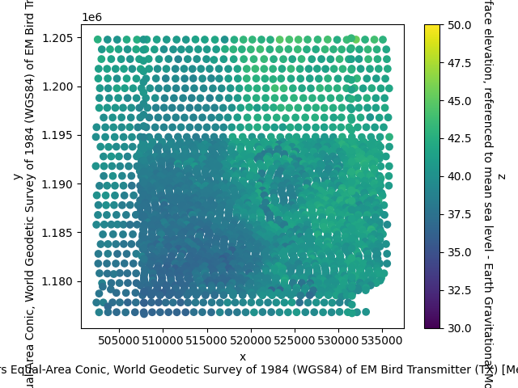
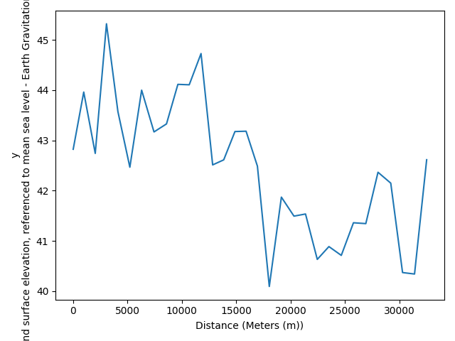
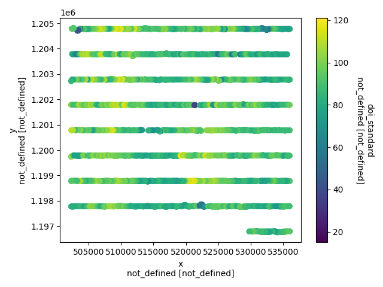

Note
Go to the end to download the full example code.
CSV to NetCDF (RESOLVE AEM)
This example demonstrates how to convert comma-separated values (CSV) data to the GS NetCDF format. Specifically this example includes:
Raw AEM data, from the Resolve system
Inverted resistivity models
Dataset Reference: Burton, B.L., Minsley, B.J., Bloss, B.R., Rigby, J.R., Kress, W.H., and Smith, B.D., 2019, Airborne electromagnetic, magnetic, and radiometric survey, Shellmound, Mississippi, March 2018 (ver. 2.0, March 2024): U.S. Geological Survey data release, https://doi.org/10.5066/P9D4EA9W.
import matplotlib.pyplot as plt
from os.path import join
import gspy
from gspy.metadata.Metadata import Metadata
Initialize the Survey
# Path to example files
data_path = '..//data_files//resolve'
# Survey metadata file
metadata = join(data_path, "data//Resolve_survey_md.yml")
# Establish the Survey
survey = gspy.Survey.from_dict(metadata)
Create a ‘data’ branch and attach data leaves
Make the branch
data_container = survey.gs.add_container('data', **dict(content = "raw and processed data"))
Point to data CSV file
# Define input data file and associated metadata file
d_data = join(data_path, 'data//Resolve.csv')
Point to MULTIPLE metadata files (YAML & CSV)
# metadata about the dataset and systems in YAML format
d_supp = join(data_path, 'data//Resolve_data_md_without_variables.yml')
# variable-specific metadata in a CSV Data Dictionary format
var_meta = join(data_path, 'data//Resolve_DataDictionary_md.csv')
# merge the two metadata and pass it all through for the raw AEM data
md = Metadata.merge(Metadata.read(d_supp), Metadata.read(var_meta, usgs=True))
# Add the raw AEM data
rd = data_container.gs.add(key='raw_data', data_filename=d_data, metadata_file=md)
Create a ‘models’ branch and attach data leaves
Import inverted AEM models from CSV-format.
model_container = survey.gs.add_container('models', **dict(content = "inverted models"))
Define input model file and associated metadata file
m_data = join(data_path, 'model//Resolve_model.csv')
m_supp = join(data_path, 'model//Resolve_model_md.yml')
Add the inverted AEM models as a tabular dataset
mod_branch = model_container.gs.add(key="model", data_filename=m_data, metadata_file=m_supp)
Inspect the two branches
Data Branch
print(survey['data'])
<xarray.DataTree 'data'>
Group: /survey/data
│ Dimensions: ()
│ Data variables:
│ spatial_ref float64 8B 0.0
│ Attributes:
│ content: raw and processed data
│ type: container
└── Group: /survey/data/raw_data
│ Dimensions: (index: 2334, layer_depth: 31, nv: 2, spec_sample: 256,
│ channel: 2)
│ Coordinates:
│ * index (index) int32 9kB 0 1 2 3 4 5 ... 2329 2330 2331 2332 2333
│ * layer_depth (layer_depth) float64 248B 2.5 7.5 12.5 ... 147.5 152.5
│ * nv (nv) int64 16B 0 1
│ * spec_sample (spec_sample) int64 2kB 0 1 2 3 4 ... 251 252 253 254 255
│ * channel (channel) <U10 80B 'in-phase' 'quadrature'
│ spatial_ref float64 8B 0.0
│ x (index) float64 19kB 5.351e+05 5.341e+05 ... 5.315e+05
│ y (index) float64 19kB 1.205e+06 1.205e+06 ... 1.205e+06
│ z (index) float64 19kB 42.82 43.96 42.74 ... 42.73 43.3
│ Data variables: (12/88)
│ layer_depth_bnds (layer_depth, nv) float64 496B 0.0 5.0 5.0 ... 150.0 155.0
│ line (index) int64 19kB 10010 10010 10010 ... 19020 19020 19020
│ date (index) int64 19kB 20180302 20180302 ... 20180226 20180226
│ utc_time (index) float64 19kB 1.92e+05 1.92e+05 ... 1.741e+05
│ flight (index) int64 19kB 28022 28022 28022 ... 28011 28011 28011
│ fiducial (index) float64 19kB 969.8 999.8 ... 2.49e+03 2.52e+03
│ ... ...
│ 400hz_final (index, channel) float64 37kB 118.5 169.3 ... 95.85 102.4
│ 1800hz_final (index, channel) float64 37kB 302.9 423.8 ... 189.6 223.3
│ 3300hz_final (index, channel) float64 37kB 185.9 236.5 ... 91.34 129.8
│ 8200hz_final (index, channel) float64 37kB 1.035e+03 878.8 ... 563.8
│ 40k_hz_final (index, channel) float64 37kB 2.033e+03 751.5 ... 839.4
│ 140k_hz_final (index, channel) float64 37kB 2.314e+03 471.7 ... 696.3
│ Attributes:
│ content: raw data
│ comment: This dataset includes minimally processed (raw) AEM data
│ type: data
│ mode: airborne
│ method: electromagnetic, frequency domain
│ instrument: RESOLVE
│ structure: tabular
├── Group: /survey/data/raw_data/resolve_system
│ Dimensions: (n_transmitter: 6, n_receiver: 6, n_couplet: 6,
│ dim_0: 1, frequency: 6)
│ Coordinates:
│ * n_transmitter (n_transmitter) int64 48B 0 1 2 3 4 5
│ * n_receiver (n_receiver) int64 48B 0 1 2 3 4 5
│ * n_couplet (n_couplet) int64 48B 0 1 2 3 4 5
│ * frequency (frequency) int64 48B 400 1800 ... 40000 140000
│ Dimensions without coordinates: dim_0
│ Data variables: (12/17)
│ transmitter_label (n_transmitter) <U7 168B '400Z' ... '140000Z'
│ transmitter_orientation (n_transmitter) <U1 24B 'z' 'z' 'x' 'z' 'z' 'z'
│ receiver_label (n_receiver) <U7 168B '400Z' '1800Z' ... '140000Z'
│ receiver_orientation (n_receiver) <U1 24B 'z' 'z' 'x' 'z' 'z' 'z'
│ couplet_label (n_couplet) <U15 360B '400Z_400Z' ... '140000Z_...
│ couplet_transmitters (n_couplet) <U7 168B '400Z' '1800Z' ... '140000Z'
│ ... ...
│ couplet_actual_frequency (n_couplet) int64 48B 381 1829 ... 40430 133400
│ couplet_moment (n_couplet) int64 48B 359 187 150 72 49 17
│ data_normalized (dim_0) bool 1B True
│ output_data_type <U3 12B 'ppm'
│ reference_frame <U24 96B 'right-handed positive up'
│ output_sample_frequency (dim_0) int64 8B 10
│ Attributes:
│ type: system
│ mode: airborne
│ method: electromagnetic, frequency domain
│ instrument: RESOLVE
│ name: resolve_system
├── Group: /survey/data/raw_data/magnetic_system
│ Dimensions: (n_transmitter: 1,
│ n_receiver: 1,
│ n_couplet: 1,
│ n_base_magnetometer: 1)
│ Coordinates:
│ * n_transmitter (n_transmitter) int64 8B ...
│ * n_receiver (n_receiver) int64 8B 0
│ * n_couplet (n_couplet) int64 8B 0
│ * n_base_magnetometer (n_base_magnetometer) int64 8B ...
│ Data variables: (12/48)
│ transmitter_label (n_transmitter) <U7 28B ...
│ transmitter_description (n_transmitter) <U107 428B ...
│ receiver_label (n_receiver) <U19 76B ...
│ receiver_sensor_type (n_receiver) <U12 48B ...
│ receiver_sensor_model (n_receiver) <U4 16B ...
│ receiver_sensor_manufacturer (n_receiver) <U8 32B ...
│ ... ...
│ igrf_model_date <U21 84B '2018-11-15...
│ igrf_model_height <U39 156B 'sensor al...
│ igrf_removed_model_epoch <U6 24B '2015.0'
│ tieline_levelling <U153 612B 'Magnetic...
│ altitude_correction <U4 16B 'none'
│ deliverables <U158 632B 'Total Ma...
│ Attributes:
│ type: system
│ mode: airborne
│ method: magnetic
│ instrument: Scintrex CS-3 cesium-vapor magnetometer
│ name: magnetic_system
└── Group: /survey/data/raw_data/radiometric_system
Dimensions: (n_transmitter: 1, n_receiver: 1,
n_couplet: 1, dim_0: 1)
Coordinates:
* n_transmitter (n_transmitter) int64 8B 0
* n_receiver (n_receiver) int64 8B 0
* n_couplet (n_couplet) int64 8B 0
Dimensions without coordinates: dim_0
Data variables: (12/84)
transmitter_label (n_transmitter) <U7 28B 'passive'
transmitter_description (n_transmitter) <U166 664B 'No ...
receiver_label (n_receiver) <U18 72B 'gamma_sp...
receiver_sensor_type (n_receiver) <U30 120B 'NaI(Tl)...
receiver_sensor_model (n_receiver) <U6 24B 'RS-500'
receiver_sensor_manufacturer (n_receiver) <U24 96B 'Radiatio...
... ...
prefiltering <U136 544B 'Radar altimeter, pr...
compton_stripping <U138 552B 'Height-corrected Co...
altitude_attenuation_correction <U19 76B 'nominal_height 60 m'
conversion_to_concentrations <U171 684B 'Corrected K, U, Th ...
radiometric_ratios <U136 544B 'Ratios (eU/eTh, eU/...
deliverables <U203 812B 'Total Count, Potass...
Attributes:
type: system
mode: airborne
method: gamma spectrometry
instrument: Radiation Solutions RS-500 gamma-ray spectrometer
name: radiometric_system
Models Branch
print(survey['models'])
<xarray.DataTree 'models'>
Group: /survey/models
│ Dimensions: ()
│ Data variables:
│ spatial_ref float64 8B 0.0
│ Attributes:
│ content: inverted models
│ type: container
└── Group: /survey/models/model
│ Dimensions: (index: 9999, layer_depth: 30, nv: 2)
│ Coordinates:
│ * index (index) int32 40kB 0 1 2 3 4 ... 9994 9995 9996 9997 9998
│ * layer_depth (layer_depth) float64 240B 0.5 1.55 2.7 ... 119.7 132.5
│ * nv (nv) int64 16B 0 1
│ spatial_ref float64 8B 0.0
│ x (index) float64 80kB 5.36e+05 5.36e+05 ... 5.297e+05
│ y (index) float64 80kB 1.205e+06 1.205e+06 ... 1.197e+06
│ z (index) float64 80kB 41.1 41.1 41.1 ... 41.7 41.7 41.5
│ Data variables: (12/15)
│ layer_depth_bnds (layer_depth, nv) float64 480B 0.0 1.0 1.0 ... 125.0 140.0
│ line (index) int64 80kB 10010 10010 10010 ... 10330 10330 10330
│ lat_wgs84_dd (index) float64 80kB 33.76 33.76 33.76 ... 33.69 33.69
│ lon_wgs84_dd (index) float64 80kB -90.17 -90.17 ... -90.24 -90.24
│ record (index) int64 80kB 1 2 3 4 5 ... 9995 9996 9997 9998 9999
│ alt (index) float64 80kB 40.9 41.4 41.8 ... 55.6 53.8 52.0
│ ... ...
│ resdata (index) float64 80kB 0.422 0.886 0.813 ... 0.396 0.355
│ restotal (index) float64 80kB 0.293 0.293 0.293 ... 0.293 0.293
│ rho_i (index, layer_depth) float64 2MB 9.74 14.9 ... 15.9 16.6
│ rho_i_std (index, layer_depth) float64 2MB 3.14 2.46 ... 10.8 99.0
│ doi_conservative (index) float64 80kB 27.8 65.0 65.0 ... 70.1 70.4 70.6
│ doi_standard (index) float64 80kB 66.2 78.2 78.2 ... 87.6 87.9 88.0
│ Attributes:
│ content: inverted resistivity models
│ comment: This dataset includes inverted resistivity models derived fr...
│ type: model
│ mode: airborne
│ method: electromagnetic, frequency domain
│ instrument: RESOLVE
│ structure: tabular
└── Group: /survey/models/model/inversion_parameters
Dimensions: ()
Data variables:
parameters object 8B None
Attributes:
type: parameters
method: electromagnetic, frequency domain
instrument: RESOLVE
mode: airborne
property: electrical resistivity
name: inversion_parameters
Save to NetCDF file
d_out = join(data_path, 'Resolve.nc')
survey.gs.to_netcdf(d_out)
Reading back in the GS NetCDF file
new_survey = gspy.open_datatree(d_out)['survey']
Plotting
# Make a scatter plot of a specific data variable, using GSPy's plotter
plt.figure()
new_survey['data/raw_data'].gs.scatter(hue='z', vmin=30, vmax=50)

Subsetting by line number and plot by distance along line
subset = new_survey['data/raw_data'].gs.subset('line', 10010)
plt.figure()
_ = subset.gs.scatter(y='z', x='distance')

Make a scatter plot of a specific model variable, using GSPy’s plotter
plt.figure()
new_survey['models/model'].gs.scatter(hue='doi_standard')
plt.show()

Total running time of the script: (0 minutes 1.228 seconds)